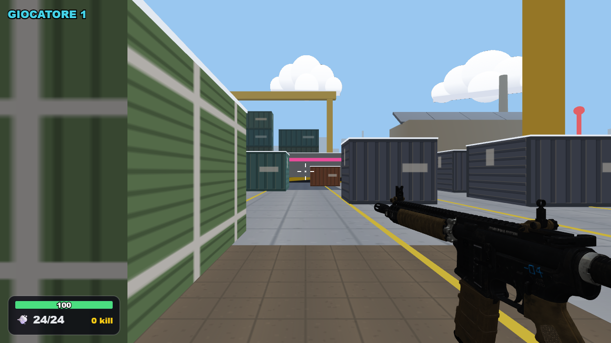
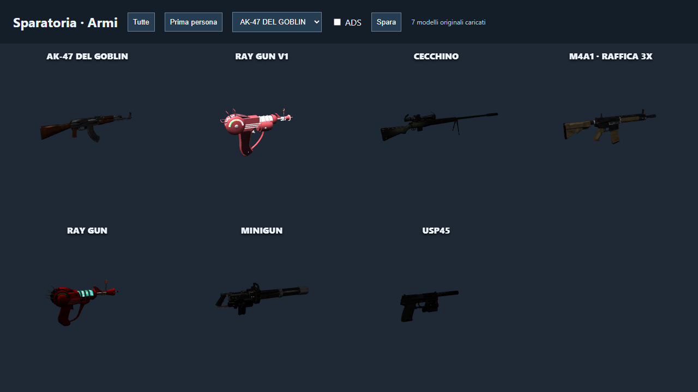
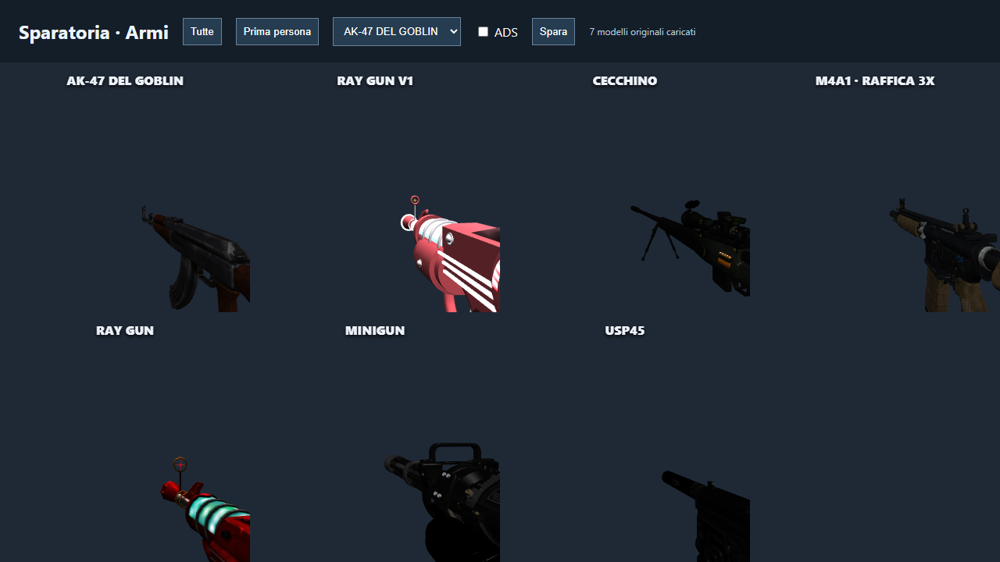
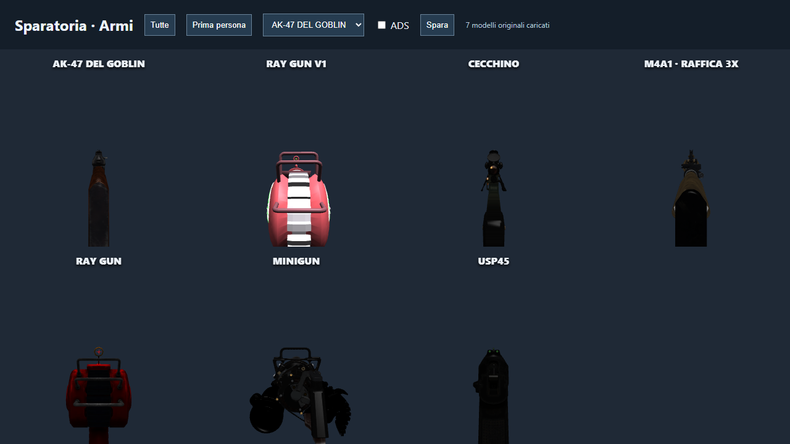
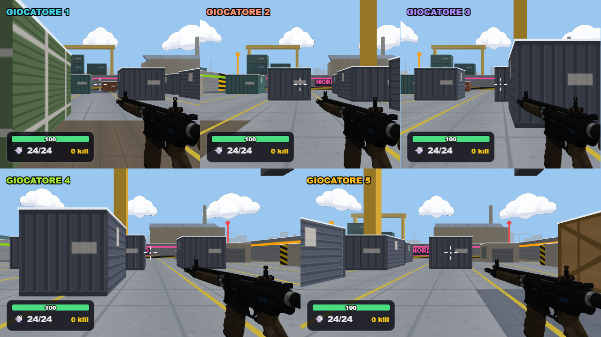

Sparatoria · Sette armi
AK-47, M4A1, USP45, cecchino, minigun e le due Ray Gun. Modelli originali su telefono, split-screen e armi degli avversari.
Apri il giocoDettagli e verificheInquadratura FPS aggiornata
Arma vicina alla camera, in basso a destra, calcio fuori campo e canna verso il centro. Prospettiva corretta anche nelle finestre dello split-screen.

I sette modelli

Prima persona

Mira ADS

Cinque visuali
